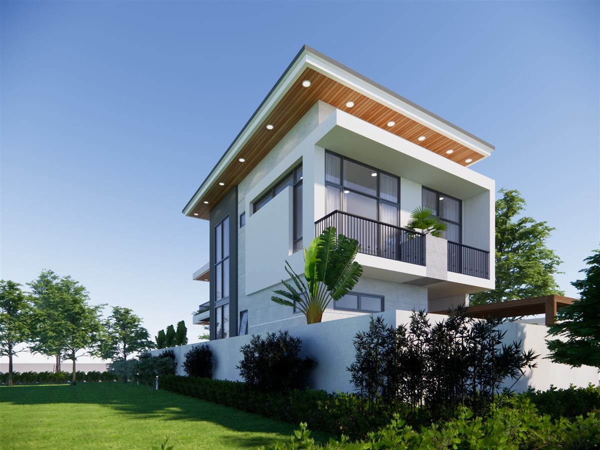
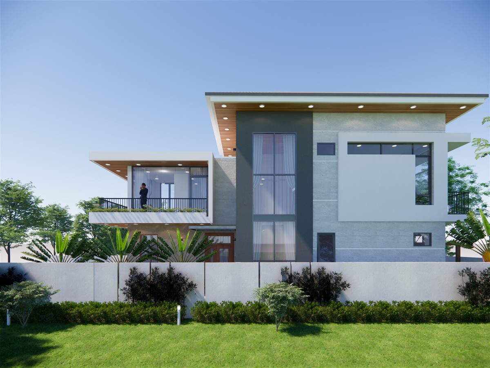
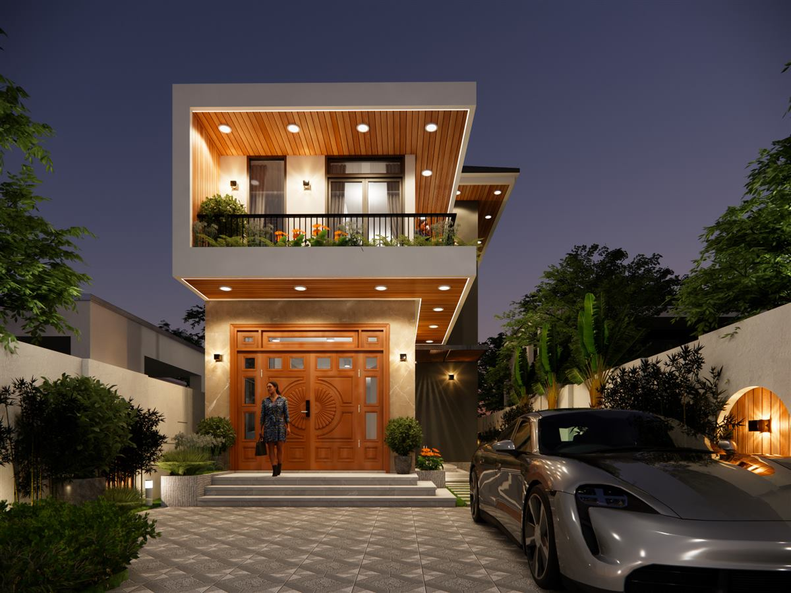
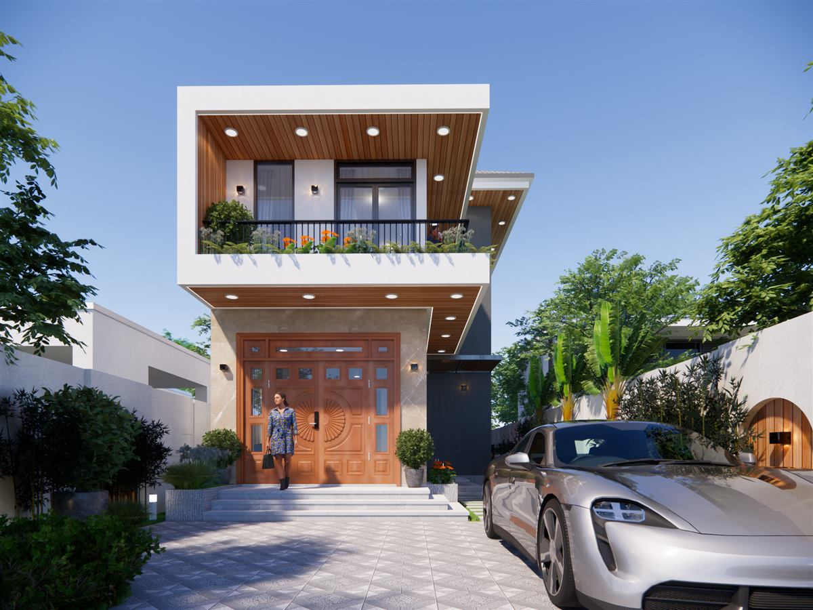
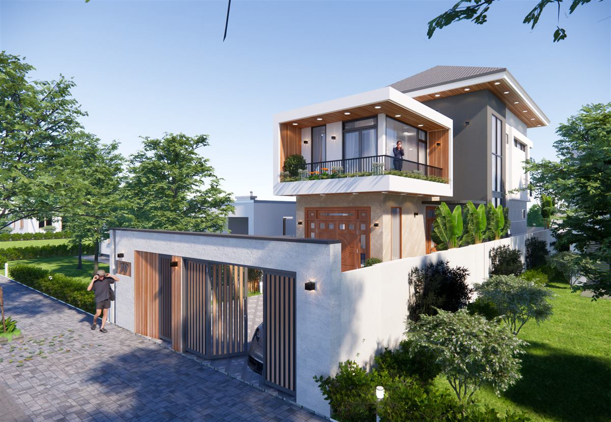

Biệt thự 2 tầng cửa gỗ chạm vườn cỏ rộng và trần gỗ ở sảnh
Cánh cửa chính thường là chi tiết được khách nhìn lâu nhất khi đến nhà. Ở mẫu biệt thự 2 tầng cửa gỗ chạm vườn cỏ rộng này của Đại Phát Decor, cửa gỗ nhiều cánh có chạm hình rẻ quạt, đặt dưới trần gỗ sáng đèn. Tám phối cảnh 3D thể hiện sảnh, mặt bên và khu vườn cỏ, gồm cả ban ngày và lúc lên đèn để anh chị dễ so sánh.

Tổng quan công trình
Tầng trên nhô ra với ban công, lan can đen, mái mỏng vươn rộng. Mặt bên phối mảng trắng, mảng xanh xám và khối đứng xám sẫm có cửa kính cao. Xung quanh là thảm cỏ, tường rào trắng chia thành từng tấm và các bụi cây thấp. Phía trước có sân lát họa tiết, sảnh bậc cấp, còn bên cạnh là một lối đi lát đá xen cỏ dẫn ra phía sau.

Biệt thự 2 tầng cửa gỗ chạm vườn cỏ rộng có sảnh ra sao
Sảnh được xử lý đơn giản nhưng rõ ràng. Cửa gỗ màu cam nâu gồm nhiều cánh, ô kính nhỏ phía trên và bên hông, tay nắm đặt giữa. Trần gỗ phía trên gắn đèn âm, tường hai bên ốp đá sáng, đèn tường nhỏ. Bậc cấp ốp đá xám dẫn lên từ sân, hai bên có chậu cây tròn và bồn hoa nhỏ màu cam. Mọi thứ đều hướng mắt về cánh cửa.


Lối đi và khu vườn
Từ sân, một lối đi các tấm đá đặt xen cỏ dẫn dọc bên nhà, có cỏ bụi nhỏ và cây cọ sát tường. Bên kia, phần vườn có thảm cỏ rộng, đèn sân thấp và các cây bụi tỉa tròn. Những tấm đá trải rộng tạo nhịp nhẹ nhàng hơn so với một lối đi liền. Kiểu cảnh quan này cần chăm sóc đều, nhưng đổi lại sẽ tạo cảm giác rất thư giãn khi đi lại quanh nhà.


Vật liệu và màu sắc
Màu cam nâu của cửa và trần gỗ là điểm ấm giữa các mảng trắng, xám xanh. Đá sáng ở sảnh có vân nhẹ, hợp với màu gỗ. Tông xanh xám ít gặp ở nhà ở, nên gia đình cần xem mẫu thật trước khi chốt. Tường rào trắng và cỏ xanh làm nền, giúp phần thân nhà không bị rối dù có khá nhiều vật liệu khác nhau.
Lưu ý khi xây mẫu nhà này
Một vài điều nên tính sớm:
- Cửa gỗ chạm lớn ngoài trời nên có mái che đủ sâu, và cần bảo dưỡng định kỳ để giữ màu.
- Mái mỏng vươn rộng cần kết cấu tính kỹ, nhất là phần đua ra phía trên ban công.
- Thảm cỏ cần hệ thoát nước và tưới phù hợp với khí hậu nơi xây dựng.
- Anh chị có thể đọc cách tính chi phí thiết kế để chuẩn bị ngân sách.
Hỏi đáp ngắn
Cửa gỗ có thể thay bằng vật liệu khác không?
Được. Có thể dùng cửa thép vân gỗ hoặc vật liệu khác nếu muốn ít bảo dưỡng hơn, nhưng họa tiết chạm sẽ cần chọn lại.
Màu xanh xám có dễ phai không?
Màu sơn ngoài trời đều có thể nhạt theo thời gian. Nên dùng sơn chất lượng phù hợp ngoài trời và cân nhắc hướng nắng của mặt tường.
Đất nhỏ có thể áp dụng được không?
Có thể giữ cửa gỗ và mái mỏng, nhưng phần vườn phải thu lại. Hình khối cần vẽ lại theo đúng kích thước đất thực tế.
Mẫu liên quan
- Biệt thự 2 tầng góc đường mái ngói tím
- Biệt thự 2 tầng lô góc rào phù điêu vàng
- Biệt thự 2 tầng mái dốc tường trắng
Xem thêm
- Mẫu nhà vườn hiện đại sân đá xen cỏ
- Nhà 2 tầng mái lệch ô kính vòm cao
- Tất cả mẫu nhà và dịch vụ thiết kế của Đại Phát Decor
Liên hệ tư vấn
Gửi kích thước đất và mong muốn, Đại Phát Decor sẽ trao đổi phương án và báo giá.